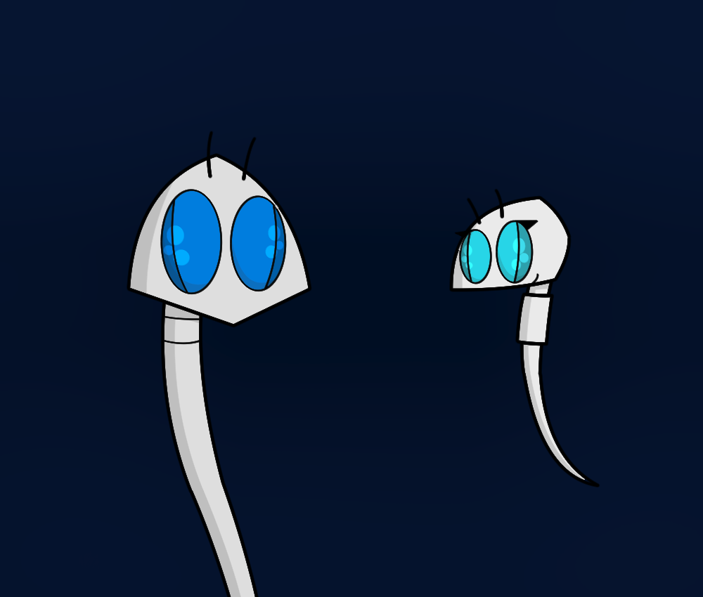

The art-style I use is simple and quite easy to learn. If you want to see better then this place isn't for you. The images are free to download but if you're gonna use them for reviews or other purposes then give credit. Stealing and/or recolor my work will only get you into trouble.
 They found Dexter! Someone.
They found Dexter! Someone. Axjey tells something funny without meaning it and Iri laughs.
Axjey tells something funny without meaning it and Iri laughs. Possibly not broken image of a traditional drawn guy.
Possibly not broken image of a traditional drawn guy. Another 3DS character of mine. I can't work with 3DS.
Another 3DS character of mine. I can't work with 3DS. A synth called Green.
A synth called Green.Another oc. This was just a quick reference of someone called Zeemy but I like it very much.
{kind=link}
 No And Yes. It's not that tricky.
No And Yes. It's not that tricky. Cute Zeemy for you.
Cute Zeemy for you. Yes. I've gotten Marathon backgrounds going on here.
Yes. I've gotten Marathon backgrounds going on here. Art for a 1hoshi star from a couple of places.
Art for a 1hoshi star from a couple of places. A charming pic of Zeemy.
A charming pic of Zeemy. It's possible.
It's possible.So many Zeemies! (Just 2)
{kind=link}
 The Corporate icon of Xin from my 3DS game Atmo. Xin Corp, creating the future.
The Corporate icon of Xin from my 3DS game Atmo. Xin Corp, creating the future. Some practice on human races.
Some practice on human races. From the Manic Circus!
From the Manic Circus! Something different. Still cute but also very anime. Nja is basically something any member of Zeemy's specie says.
Something different. Still cute but also very anime. Nja is basically something any member of Zeemy's specie says. This is Ete, an old character I made for a slideshow in the past. I thought the project wasn't that good so I stopped with it but I couldn't let the characters die like that. There might come more from it.
This is Ete, an old character I made for a slideshow in the past. I thought the project wasn't that good so I stopped with it but I couldn't let the characters die like that. There might come more from it.This is Gaern, He's a writer and still wears plate armor. He was to bring Ete out on an adventure and they both ended up falling in love.
{kind=link}
 Not very new but it's perfect.
Not very new but it's perfect.Kodard and Jebby. Note that here the Screeners have mouths(Or visibly Jebby only). Who are these characters?
{kind=link}
 This is an old image if you didn't know. The shading was an experiment and I might go back to it. It's Skree related this one!
This is an old image if you didn't know. The shading was an experiment and I might go back to it. It's Skree related this one!Page 1
Page 2
Go back to start